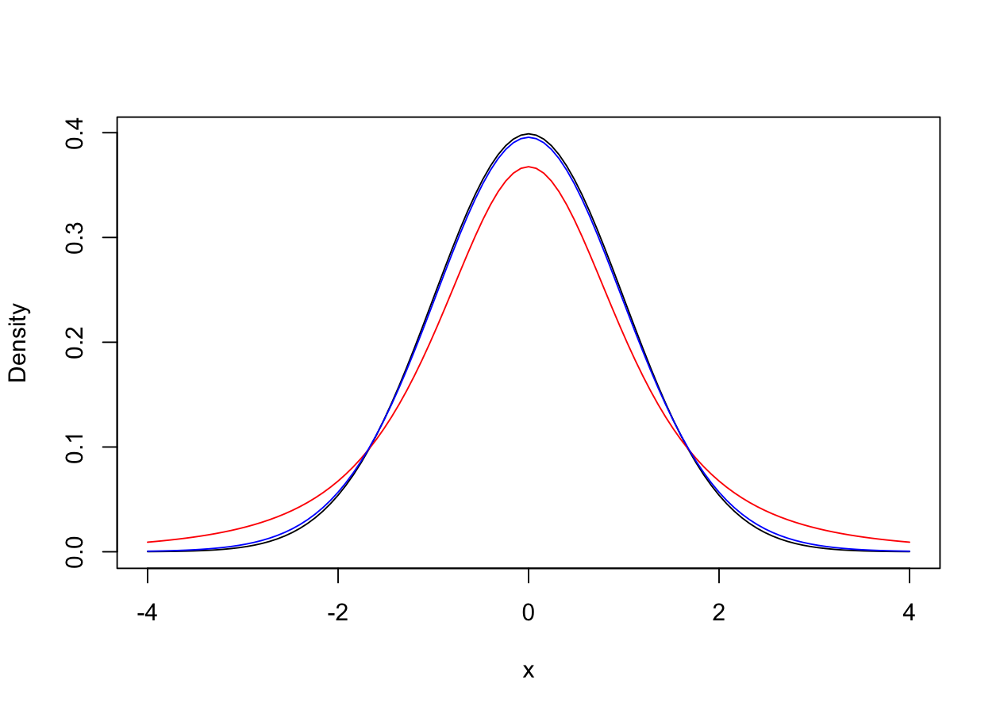
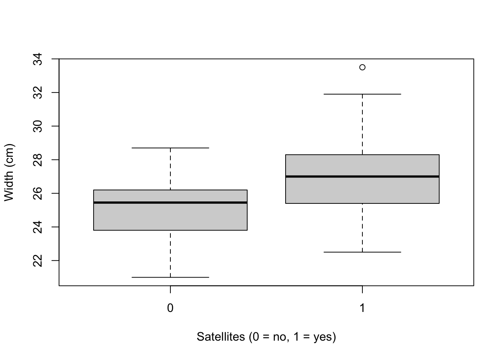

Confidence intervals for a proportion and for a mean
The meaning of the confidence level
Significance tests for a mean and for a proportion
Comparing the means of two groups
NoteNote
The exercises associated with this unit are available at this link.
Horseshoe crabs
A study considered n = 173 female horseshoe crabs on an island off the coast of Florida. During the spawning season, a female migrates to the shore with a male attached to her, and lays her eggs in the sand.
Other males, called satellites, may cluster around the pair and also fertilise the eggs. For each female, the data report:
width, the width of the carapace (cm);
y, equal to 1 if the female has at least one satellite, 0 otherwise.
NoteResearch question
How many females attract satellites? How large are female horseshoe crabs? Do larger females attract more males?
'data.frame': 173 obs. of 7 variables:
$ crab : int 1 2 3 4 5 6 7 8 9 10 ...
$ sat : int 8 0 9 0 4 0 0 0 0 0 ...
$ y : int 1 0 1 0 1 0 0 0 0 0 ...
$ weight: num 3.05 1.55 2.3 2.1 2.6 2.1 2.35 1.9 1.95 2.15 ...
$ width : num 28.3 22.5 26 24.8 26 23.8 26.5 24.7 23.7 25.6 ...
$ color : int 2 3 1 3 3 2 1 3 2 3 ...
$ spine : int 3 3 1 3 3 3 1 2 1 3 ...
A confidence interval for a proportion
The proportion of females with at least one satellite is the mean of the variable y. If n\hat{\pi} \ge 10 and n(1-\hat{\pi}) \ge 10, a 100(1-\alpha)\% confidence interval for \pi is
\left(\hat{\pi} - z_{1-\alpha/2}\sqrt{\frac{\hat{\pi}(1-\hat{\pi})}{n}}, \ \hat{\pi} + z_{1-\alpha/2}\sqrt{\frac{\hat{\pi}(1-\hat{\pi})}{n}}\right),
that is, the point estimate plus or minus a quantile times the estimated standard error.
n <-nrow(Crabs) # Sample sizepi_hat <-mean(Crabs$y) # Sample proportionc(n * pi_hat, n * (1- pi_hat)) # Both larger than 10
The command prop.test computes a slightly different (and more accurate) interval, which is why here we use the formula directly.
What does 95% confidence mean?
Suppose that the true proportion is \pi = 0.65. We simulate R = 1000 studies of n = 173 crabs and, for each of them, we compute the 95\% confidence interval. Thanks to the vectorised operations of R, we do not need a for loop:
set.seed(123)pi_true <-0.65R <-1000pi_hat_sim <-rbinom(R, size = n, prob = pi_true) / n # R sample proportionsse_sim <-sqrt(pi_hat_sim * (1- pi_hat_sim) / n)lower <- pi_hat_sim - z_quant * se_sim # R lower endpointsupper <- pi_hat_sim + z_quant * se_sim # R upper endpointshead(cbind(lower, upper)) # The first intervals
Since \hat{\pi}(1-\hat{\pi}) \le 1/4, the width is at most z_{1-\alpha/2}/\sqrt{n}. To obtain a 95\% interval with width at most w^\star, whatever the value of \hat{\pi}, we need n \ge (z_{1-\alpha/2}/w^\star)^2. For instance, with w^\star = 0.1:
w_star <-0.1# Maximum width(qnorm(0.975) / w_star)^2# Minimum sample size, to be rounded up
[1] 384.1459
The t distribution
For the mean, the standard deviation \sigma is typically unknown and it is replaced by s. Then, for a normal population,
T = \frac{\bar{Y} - \mu}{S/\sqrt{n}} \sim t_{n-1}.
The t distribution has heavier tails than the standard normal, and gets closer to it as the degrees of freedom increase:
curve(dnorm(x), from =-4, to =4, ylab ="Density") # Standard normalcurve(dt(x, df =3), add =TRUE, col ="red") # t with 3 degrees of freedomcurve(dt(x, df =30), add =TRUE, col ="blue") # t with 30 degrees of freedom

A confidence interval for the mean
A 100(1-\alpha)\% confidence interval for the mean width \mu is
\left(\bar{y} - t_{\alpha/2,\,n-1} \frac{s}{\sqrt{n}}, \ \bar{y} + t_{\alpha/2,\,n-1} \frac{s}{\sqrt{n}}\right),
where t_{\alpha/2,\,n-1} is the quantile of the t distribution with n - 1 degrees of freedom and right-tail probability \alpha/2:
y <- Crabs$widtht_quant <-qt(1- alpha /2, df = n -1) # Right-tail probability alpha / 2c(mean(y) - t_quant *sd(y) /sqrt(n), mean(y) + t_quant *sd(y) /sqrt(n))
[1] 25.98234 26.61535
The command t.test computes the same interval, reported in its output as 95 percent confidence interval (the test about \mu = 0 in the first lines is not of interest here):
t.test(y, conf.level =0.95)
One Sample t-test
data: y
t = 164.01, df = 172, p-value < 2.2e-16
alternative hypothesis: true mean is not equal to 0
95 percent confidence interval:
25.98234 26.61535
sample estimates:
mean of x
26.29884
Since n \ge 30, the normal quantile z_{1-\alpha/2} would give almost the same result: compare qnorm(0.975) and qt(0.975, df = 172). If \sigma were known, we would use z_{1-\alpha/2} and \sigma in place of t_{\alpha/2,\,n-1} and s.
A test for a mean
A study compared therapies for 72 young girls suffering from anorexia. For each girl, the weight (in pounds) is measured before and after the therapy. Let us consider the 29 girls who received the cognitive behavioural therapy (cb):
Does the therapy change the weight, on average? We test H_0: \mu = 0 against H_a: \mu \neq 0. Under H_0, the test statistic
t = \frac{\bar{y} - \mu_0}{s / \sqrt{n}}
has a t distribution with n - 1 degrees of freedom.
The observed statistic falls in the critical region, |t| > 2.05, and equivalently the P-value is smaller than 0.05: we rejectH_0.
t.test(change_cb, mu =0)
One Sample t-test
data: change_cb
t = 2.2156, df = 28, p-value = 0.03502
alternative hypothesis: true mean is not equal to 0
95 percent confidence interval:
0.2268902 5.7869029
sample estimates:
mean of x
3.006897
Coherently, the 95\% confidence interval does not contain 0.
A test for a proportion
Let us go back to the survey on climate change of Unit I: 524 people out of 1008 said that climate change is a major threat. Under H_0: \pi = \pi_0, the test statistic
z = \frac{\hat{\pi} - \pi_0}{\sqrt{\pi_0(1-\pi_0)/n}}
has approximately a standard normal distribution. We first test H_0: \pi = 0.5 against H_a: \pi \neq 0.5:
1-sample proportions test without continuity correction
data: 524 out of 1008, null probability 0.5
X-squared = 1.5873, df = 1, p-value = 0.2077
alternative hypothesis: true p is not equal to 0.5
95 percent confidence interval:
0.4889822 0.5505497
sample estimates:
p
0.5198413
Is more than half of the population worried? With the one-sided alternative H_a: \pi > 0.5, the P-value is the right tail only:
1-pnorm(z) # One-sided P-value
[1] 0.103856
In both cases the P-value is larger than \alpha = 0.05: we do not rejectH_0. This does not mean that H_0 is true: the data are simply not enough to rule it out.
Comparing two groups
Back to the horseshoe crabs: do females with satellites (y = 1) have a larger carapace than those without (y = 0)?
boxplot(width ~ y, data = Crabs, xlab ="Satellites (0 = no, 1 = yes)", ylab ="Width (cm)")

The command t.test with a formula compares the means of the two groups, testing H_0: \mu_0 = \mu_1 and giving a confidence interval for the difference \mu_0 - \mu_1:
t.test(width ~ y, data = Crabs, var.equal =TRUE)
Two Sample t-test
data: width by y
t = -5.7311, df = 171, p-value = 4.415e-08
alternative hypothesis: true difference in means between group 0 and group 1 is not equal to 0
95 percent confidence interval:
-2.366694 -1.154056
sample estimates:
mean in group 0 mean in group 1
25.16935 26.92973
The P-value is very small: females with satellites are, on average, larger.
NoteNote
The option var.equal = TRUE assumes that the two groups have the same variability. By default, R uses a version of the test that does not make this assumption.